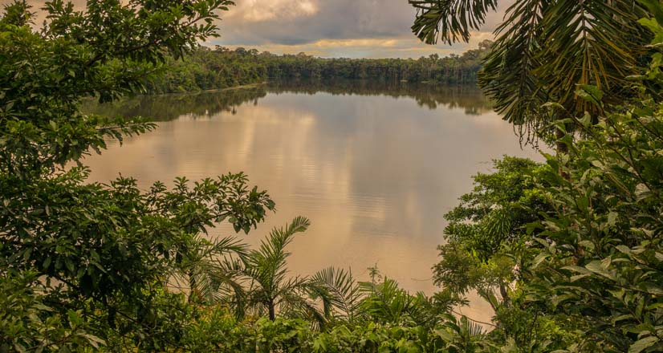

💐Dashboard💐
Este panel muestra un resumen informativo sobre las zonas más visitadas dentro de la Reserva Nacional Tambopata. Aquí podrás observar el número de visitas mensuales y el nivel de popularidad de cada lugar turístico clave. Esta información ayuda a comprender el flujo de turistas y planificar futuras visitas.
